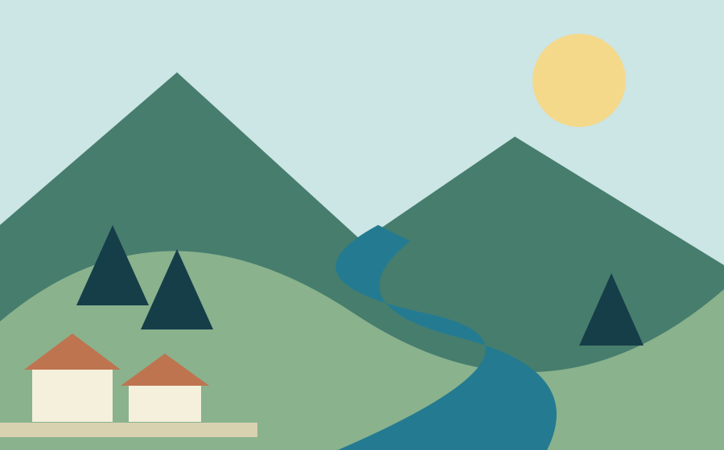

Build a career in environmental science
Learn about the kinds of work in our fictional agency. No positions are available.
Search five local pages. No external search service is contacted.
Fictional national agency · research edition
Learning together · Aster research collection
Explore how fictional communities learn about watersheds, from upland streams to the coast.
Explore water resources →
Learn about the kinds of work in our fictional agency. No positions are available.
Read a sample planning checklist, with no application or funding service.
Learn the vocabulary used in sample water information.
Stories from an invented jurisdiction, prepared for this study.
A new sample collection follows water through a fictional landscape.
See how observation notes can become a shared learning resource.
An invented community considers reuse and repair.